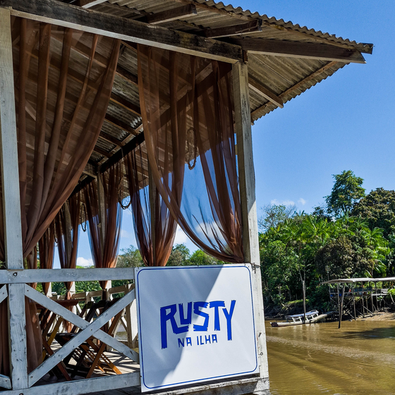
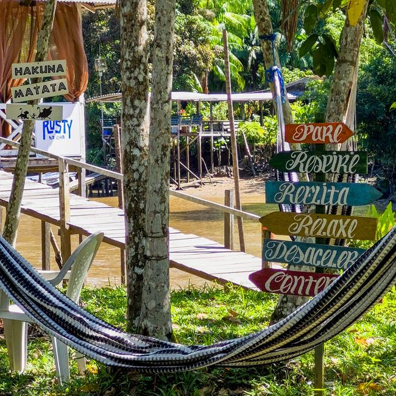
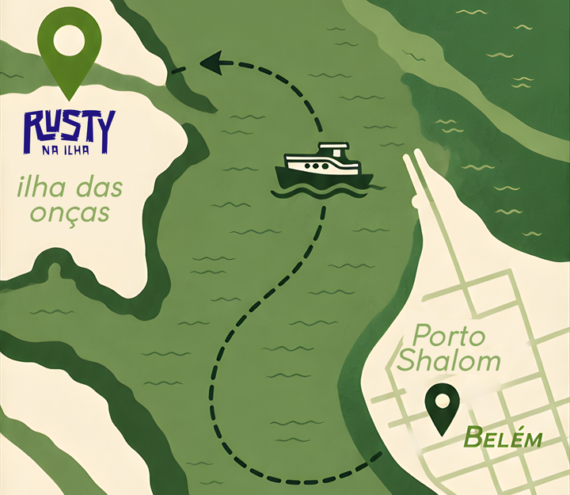

Sabores da ilha, banho de rio e pôr do sol.
Um pedaço da Amazônia na Ilha das Onças, a 20 minutos de Belém. Cozinha regional e contemporânea, frutos do rio, redes na sombra, música ao vivo e o açaí tirado do nosso quintal.


Comida de verdade, no ritmo da maré
Nascido de um sonho à beira d'água, o Rusty é um restaurante ribeirinho que une os sabores da Amazônia a um preparo contemporâneo. Aqui você almoça com os pés perto do rio, descansa numa rede e termina o dia vendo o sol se pôr sobre as águas.
- Cozinha de mistura: regional, oriental e contemporânea, valorizando o que a ilha oferece.
- Açaí da casa tirado do próprio quintal e drinques autorais exclusivos.
- Estrutura completa: áreas externas, redes, espaço kids e lugares pra tomar banho de rio.
Uma prévia do menu
Como chegar à ilha
A travessia faz parte do passeio: 20 minutos de rio com vista pra Belém. Bem mais fácil do que parece.
- 1
Vá ao Porto Shalom
Rua Siqueira Mendes, 160 — Cidade Velha, Belém. Ao lado do Açaí Biruta.
- 2
Embarque na travessia
Os barcos saem a cada 1 hora. Recomendamos confirmar o horário com a gente no WhatsApp.
- 3
20 min de rio
Atravesse até a Ilha das Onças aproveitando a paisagem ribeirinha.
- 4
Chegou ao Rusty
O barco encosta direto na ilha. É só descer e aproveitar.

- EmbarquePorto Shalom · Rua Siqueira Mendes, 160 — Cidade Velha, Belém-PA
- FuncionamentoSexta a domingo e feriados · 10h às 18h
- TravessiaBarcos saindo a cada 1 hora · ~20 min de rio
- Reservas(91) 99316-1815 — WhatsApp
Reserve sua mesa à beira do rio
Garanta seu lugar pro próximo fim de semana. Chama a gente no WhatsApp ou acompanhe as novidades no Instagram.